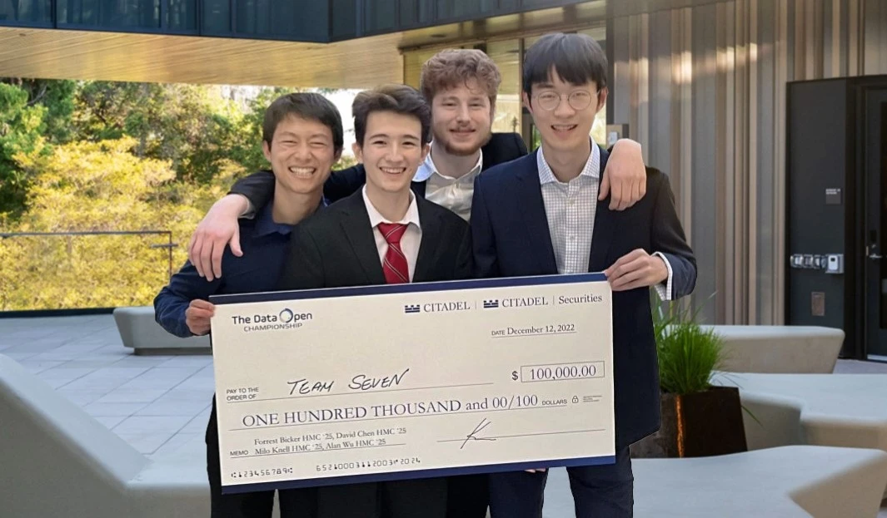

Last week three friends and I competed in the 2022 Citadel Data Open Championship, the "largest and most prestigious university-level data science competition in the world". Yesterday, our team was excited to be named the competition's champions.

Acknowledgements
Thanks to my teammates David Chen, Milo Knell, and Alan Wu for making the grind a fun experience, along with our friend Sahil Rane who managed to snag the runner up title. Special thanks to Professor Linus Yamane who taught us many of the techniques we used in our investigation and inspired our appreciation for traditional statistical modeling. We also appreciate our research PI Professor Lucas Bang for hosting us in his lab during the competition. Thanks to Citadel and Correlation One for organizing the events! We had fun and are excited for what lies ahead.